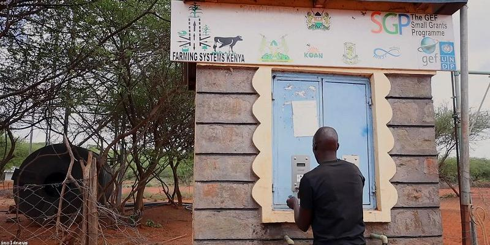

Transitioning to Renewable Energy

One of the most effective ways to address climate change is to transition from fossil fuels to renewable energy sources like solar, wind, and hydropower.
- Solar Energy: Utilizing the sun's energy for electricity and heating.
- Wind Energy: Using wind turbines to generate clean electricity.
- Hydropower: Harnessing the energy of flowing water to produce power.
- Geothermal Energy: Utilizing heat from the Earth's interior for energy.
Living Sustainably
We can also make a difference by living more sustainably and reducing our personal carbon footprint. This includes using energy more efficiently, reducing waste, and eating a more plant-based diet.